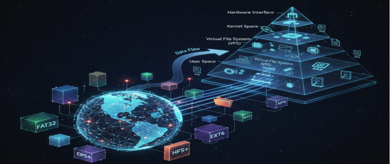
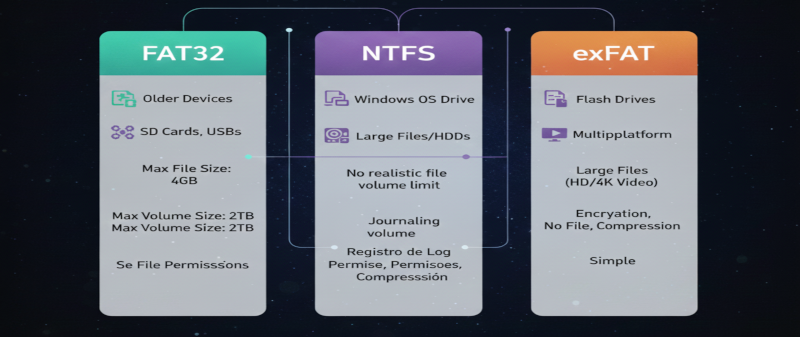
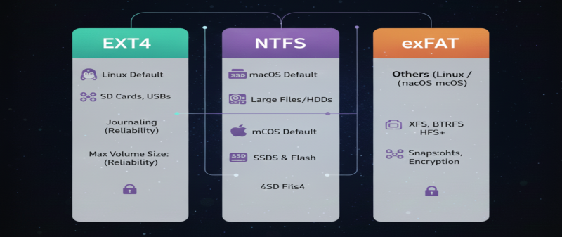
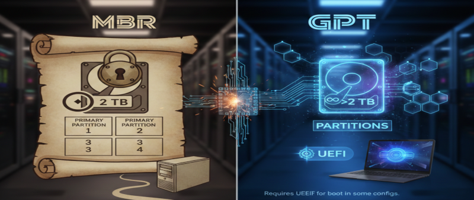
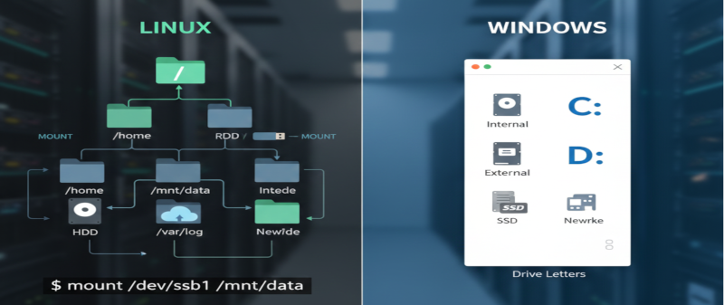
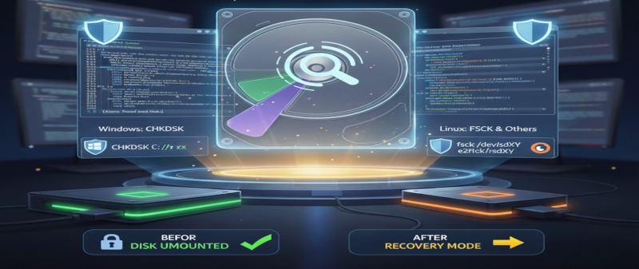
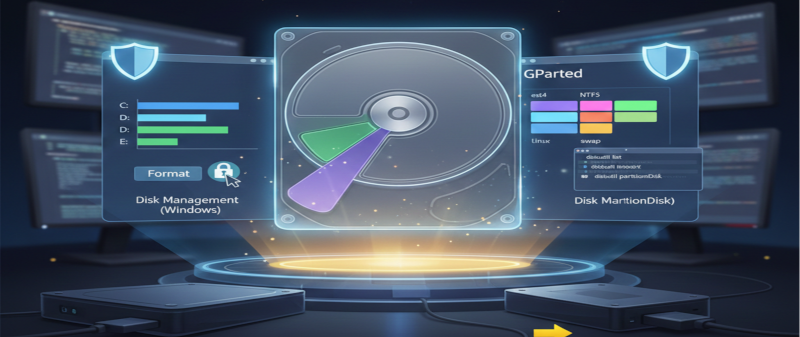
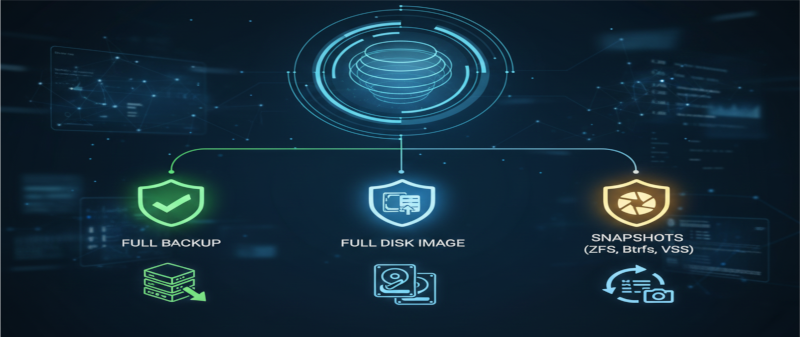

O que é um Sistema de Arquivos?
Um sistema de arquivos organiza como os dados são armazenados e recuperados no dispositivo.
Ele define estrutura de diretórios, metadados, permissões e como os blocos físicos são gerenciados.

FAT32 vs NTFS vs exFAT
FAT32: compatível, limitação de 4GB por arquivo.
NTFS: journaling, permissões, compressão e melhor segurança (Windows).
exFAT: ideal para USBs e cartões — suporta arquivos grandes e ampla compatibilidade.

ext4, APFS e outros (Linux / macOS)
ext4: padrão em muitas distribuições Linux — robusto e eficiente.
APFS: usado pelo macOS moderno, otimizado para flash/SSD.
Há também Btrfs, XFS e ZFS para cenários avançados.

MBR vs GPT (Particionamento)
MBR: antigo, suporta até 2 TB e 4 partições primárias.
GPT: moderno, suporta discos >2 TB e muitas partições; requer UEFI para boot em algumas configurações.

Montagem e pontos de montagem
Em Linux, dispositivos são mountados em diretórios. No Windows, são atribuídas letras de unidade.
Entender o ponto de montagem ajuda em backups e recuperação.

Permissões e Atributos
Sistemas UNIX usam permissões (rwx) e proprietário/grupo. NTFS usa ACLs mais detalhadas.
Permissões corretas são essenciais para segurança e funcionamento de serviços.

Ferramentas de verificação e reparo
Windows: CHKDSK para verificar e reparar erros de disco.
Linux: fsck, e2fsck para ext* e utilitários específicos (xfs_repair, btrfs check).
Use sempre com o disco desmontado ou em modo de recuperação.

Formatar e particionar com segurança
Use ferramentas como Disk Management (Windows), GParted (Linux) ou diskutil (macOS).
Sempre faça backup antes de redimensionar ou formatar partições.

Backup, recuperação e snapshots
Estratégias: backups regulares, imagem do disco, snapshots (ZFS, Btrfs, VSS).
Snapshots permitem recuperação rápida de estados anteriores sem clonar todo o disco.
Prática em sala